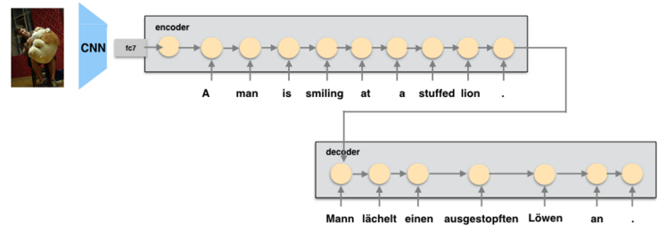
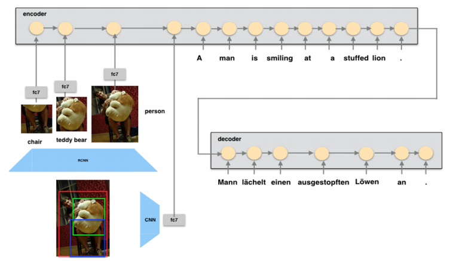
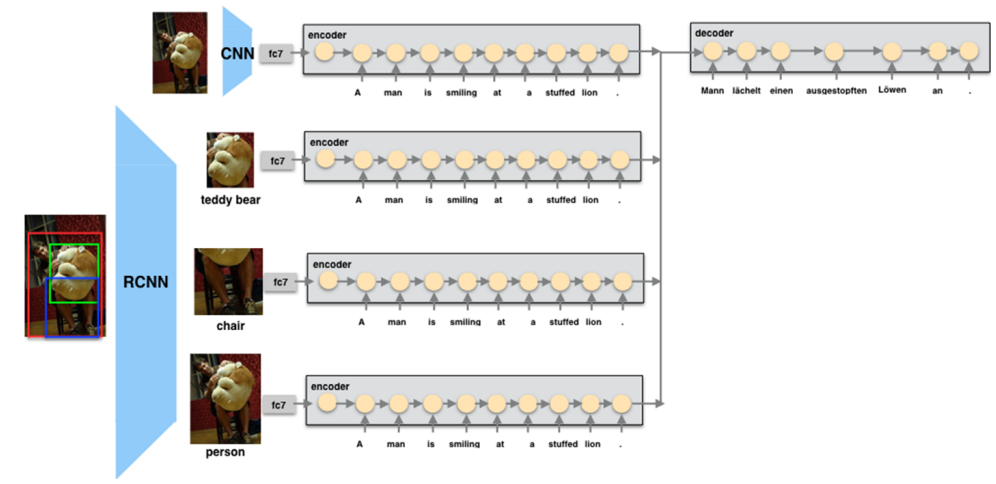
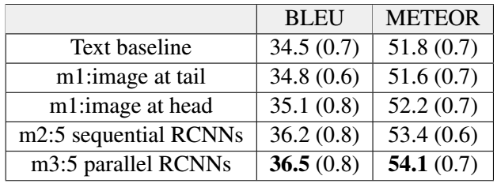
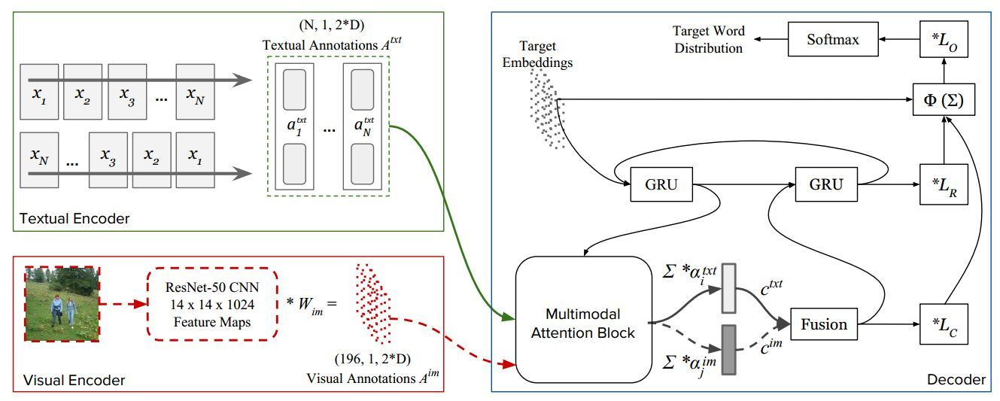
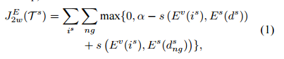
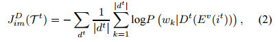
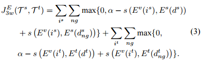
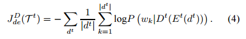

PaperWeekly 第二十一期
引
多信息融合是一个重要的研究趋势，尤其是对于训练数据缺乏的任务来说，如何融入其他相关信息来提高本任务的准确率是一个非常值得研究的问题。机器翻译是一个热门的研究领域，随着训练数据规模地增加，各种NN模型的效果也取得了突破的进展，google和百度均已部署上线NMT系统；融合图像、音频、视频、文本等各种模态数据的多模态研究也是一个非常热门的研究方向，本期PaperWeekly将为大家带来NMT和多模态交叉研究的paper解读，共3篇paper：
1、Attention-based Multimodal Neural Machine Translation, 2016
2、Multimodal Attention for Neural Machine Translation, 2016
3、Zero-resource Machine Translation by Multimodal Encoder-decoder Network with Multimedia Pivot, 2016
Attention-based Multimodal Neural Machine Translation
作者
Po-Yao Huang, Frederick Liu, Sz-Rung Shiang, Jean Oh, Chris Dyer
单位
CMU
关键词
Visual Features, Attention, Multimodal NMT
文章来源
ACL 2016
问题
多模态神经机器翻译，在传统的seq2seq翻译模型上，利用图像特征信息帮助提高机器翻译的结果
模型
在WMT16的多模态神经网络机器翻译新任务上的工作。
提出了3种如何将visual feature加入到seq2seq网络中的encoder，从而使得decoder更好的attention到与图像，语义相关部分的模型： global visual feature， regional visual feature，paralle threads.

global visual： 直接将VGG中的fc7抽出的feature加入到encoder的first step(head)或者是last step(tail)

regional visual： 先用R-CNN抽出region box的信息，再用VGG得到fc7的特征，将top4对应的region feature，以及global visual feature分别作为每一个step输入到encoder中

parallel threads: 与regional visual相对应的是，每个thread只利用一个region box的feature，和global visual一样的网络，将top 4对应的4 threads和gloabl thread一起做average pooling，每个therad的参数共享; attention则对应所有threads中的所有hidden states
同时本文还提出了三种rescoring translation的结果的方法， 用 1）language model 2）bilingual autoencoder 3）bilingual dictionary分别来挑选translation的句子，发现bilingual dictionary来删选翻译的句子效果最好
资源
数据集： WMT2016 (En-Ge)
图像特征提取： VGG， R-CNN
实验结果
在En-Ge的结果如图：

相关工作
NMT： Kalchbrenner and Blunsom 2013
Attention NMT： Bahdanau 2014
Joint Space Learning： Zhang 2014，Su 2015，Kiros 2014
多模态上相关工作目前并没有很多，值得快速入手
简评
本文提出了一种针对图像和文本结合的神经网络翻译模型，非常自然的将图像特征加入到seq2seq模型的encoder部分，使decoder不仅能够attention在文本上，同时也能够focus到图像上(global或者region)；并且模型的设计比较简单，没有加入太多复杂的模块。
不过只是简单的将图像的特征作为seq中的一个step，并没有考虑文本和图像之间的相关关系，如joint space，相信加入joint learing会有提升。
完成人信息
Lijun Wu from SYSU.
Multimodal Attention for Neural Machine Translation
作者
Ozan Caglayan, Loïc Barrault, Fethi Bougares
单位
University of Le Mans, Galatasaray University
关键词
NMT, Attention
文章来源
arXiv 2016.09
问题
给定图片和源语言描述的情况下，基于attention机制,生成目标语言的图片描述。
模型
模型有两个encoder，一个是textual encoder,是一个双向GRU，用于获取源语言文本的向量表示$A^{txt} = {a^{txt}_1,a^{txt}_2,…}$，另外一个是visual encoder,使用的是现成由ImageNet数据集训好的ResNet-50网络，用于获取图片的向量表示。$A^{im} = {a^{im}_1,a^{im}_2,…}$. Decoder部分，是两层的stakced GRU,先用attention方式，分别获取文本部分和图像部分的context向量$c^{txt}$和$c^{im}$,然后将两个向量concat在一起，作为新的context 向量$c$。
如图：

这样decoder部分的解码翻译的时候，不仅可以考虑到源语言的文本信息，也可以考虑到原始图片的信息。
资源
IAPRTC-12 dataset for English and German
相关工作
2014年Bahdanau的Neural Machine Translation by Jointly Learning to Align and Translate，使NMT超过了传统的PBMT，后来的NMT论文基本都是在这个文章基础上进行的改进。
2015年Elliott的工作Multi-language image description with neural sequence models. 也是在给定源语言和图片的情况下，生成目标语言。不过并没有使用attention机制。
简评
该文章的创新之处，在于对图片描述文字进行翻译的时候，考虑到了图片本身的特征信息并引入attention机制。在源语言文本生成出错的情况下，因为有图片信息参考，在一定程度上，可以减轻这种错误带来的影响。不过文章并没有利用外部英德平行语料，这可以考虑作为后面的改进方向。
完成人信息
xiaose@mail.ustc.edu.cn
中国科学技术大学
Zero-resource Machine Translation by Multimodal Encoder-decoder Network with Multimedia Pivot
作者
Hideki Nakayama，Noriki Nishida
单位
The University of Tokyo
关键词
pivot, multimodal, NMT
文章来源
arXiv, 2016.11
问题
在没有平行语料的情况下，用image当作pivot来实现机器翻译
模型
整体上讲，模型分成两部分。第一部分是多模态embedding，采用pairwise ranking loss来定义损失函数；第二部分是用RNN来实现的decoder,跟image caption里面的decoder类似。对这个问题来说，我们的训练数据包括$i^{s}$：源端的图片，$d^{s}$：源端图片对应的句子描述；$i^{t}$：目标端的图片，$d^{t}$：目标端图片对应的句子描述，和源端用的不一样的语言。文中提出了2个模型来解决这个问题：
模型1的多模态端包括了图片的encoder和源句子的encoder。图片encoder可以对源图片和目标图片通用。多模态端用$i^{s}$,$d^{s}$进行训练，损失函数为：

$E^{v}$表示图片的encoder(比如用VGG-16提取图片的feature), $E^{s}$表示源句子的encoder(比如用RNN)，$d^{s}_{ng}$表示和源端图片不相关的描述。Decoder端用$i^{t}$,$d^{t}$进行训练，损失函数为标准的 cross-entropy loss（称作图片损失):

模型2比模型1更复杂一点。在源端增加了一个目标句子描述的encoder。因此，在多模态embedding的学习中，损失函数增加了目标图片和目标图片描述的pairwise ranking loss.

在decoder的学习中，模型2除了前面的公式2定义的图片损失外，还增加了目标描述的reconstruction loss，即从多模态端输入目标描述，希望通过embedding和decoder重建这个目标描述。

资源
两个Multilingual image-description的数据集：IAPR-TC12（包含2万图片以及英语和德语的描述）和 Multi30K（包含3万图片以及英语和德语的描述)
相关工作
对于没有平行语料的机器翻译，多数文章是用某种常见语言作为pivot，比如“Neural Machine Translation with Pivot Languages”, 用英语作为西班牙语法语以及德语法语之间的pivot。缺点是翻译的时候还是要经过pivot那一步。 另外，还要一些工作是用一个模型实现many to many的翻译。在这种情况下，没有平行语料的语言对也能用这个模型进行翻译。不需要经过pivot那个中间层，但是效果一般会差一点。比如“Google’s Multilingual Neural Machine Translation System”这篇文章。
简评
这篇文章的思路很新颖，考虑用图片来作为pivot，实现没有平行语料的语言对之间的翻译。训练完成后可以直接从源语言到目标语言进行翻译，不需要经过图片。但是正如文中提到的，这种方法跟有语料训练出来的翻译效果比起来还是差很多，并且翻译的句子都比较短。另外，对一些图片难以表达的信息很难通过这种方式学到。
总结
交叉领域的研究总是会带给大家惊喜，交叉领域的交叉领域更是如此，这个领域刚刚开坑，欢迎各位有志之士跳坑。并且在2016年举办了第一届多模态机器翻译（Multimodal Machine Translation）和多语看图说话（Crosslingual Image Description）比赛，比赛主页http://www.statmt.org/wmt16/multimodal-task.html, 总结性的paper http://anthology.aclweb.org/W/W16/W16-2346.pdf